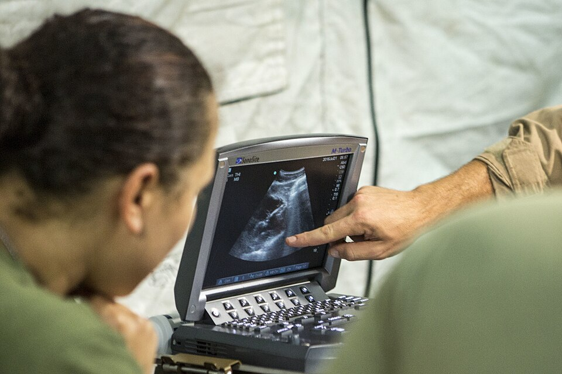
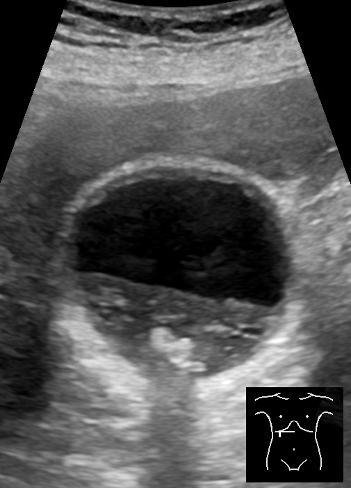
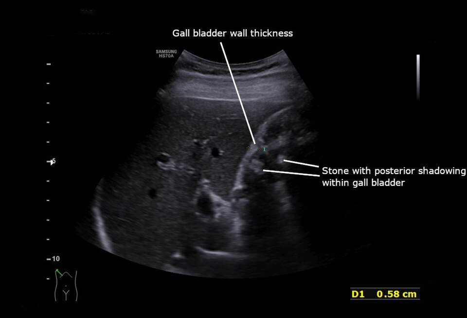
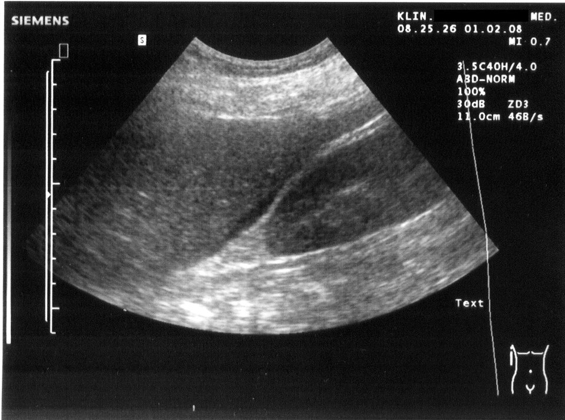

אולטרסאונד בטן
ה-gallbladder, ה-biliary tree, FAST בחבלה וה-appendix: מה רואים, מה זה אומר ומתי זה לא מספיק
בסוף המפגש תדעו
- להסביר מה היתרונות והמגבלות של אולטרסאונד בבטן החריפה
- לזהות אבן ב-gallbladder ולהבדיל אותה מבוצה ומפוליפ
- לזהות סימני דלקת חריפה של כיס המרה ולדעת מתי ה-CBD נחשב מורחב
- להכיר את ארבעת חלונות ה-FAST ואת המשמעות של נוזל חופשי במטופל חבול
- לדעת מה מחפשים ב-appendix ולמה בדיקה "לא רואים את ה-appendix" אינה שלילית
בלי קרינה, ליד המיטה
- איך זה עובד: גבישים במתמר שולחים גלי קול. רקמות שונות מחזירות אותם אחרת ומכאן התמונה
- בלי קרינה, מהיר וזול. לחלק מהמחלות הוא בדיקת הבחירה. מעדיפים אותו בילדים ובהריון
- אולטרסאונד ליד המיטה (POCUS) במיון ובטיפול נמרץ: אבחנה מהירה יותר וחיסכון
- מגבלות: גז במעיים מסתיר מבנים עמוקים. השמנה מחלישה את התמונה. התוצאה תלויה מאוד במבצע
- מה עוד רואים: נוזל בין ה-liver ל-kidney, קוטר ה-IVC (נפח), liver שחמתי, היריון מחוץ לרחם

אבן, בוצה או פוליפ?
- אולטרסאונד דרך הבטן הוא בדיקת הבחירה הראשונה בצהבת ובתלונות של ה-biliary tree
- ה-gallbladder שטחי ואין מעליו גז, לכן רואים אותו טוב. לאבנים: רגישות וסגוליות מעל 95%
- אבן: מוקד בהיר עם צל אקוסטי שחור מאחוריו. זזה כשהמטופל משנה תנוחה (אלא אם היא תקועה)
- פוליפ: קבוע במקום, בלי צל
- בוצה (sludge): זזה לאט, בלי הצל החד של אבן. עם תסמינים מתאימים, נחשבת כמו אבנים

דלקת חריפה של כיס המרה
מה רואים
- אבנים (לעתים אבן תקועה ב-gallbladder neck)
- עיבוי דופן ה-gallbladder
- נוזל סביב ה-gallbladder
- מרפי סונוגרפי: לחיצה עם המתמר מעל ה-gallbladder בשאיפה עוצרת את הנשימה

מתי ה-CBD מורחב?
- ה-CBD עובר במקביל ל-portal vein: שני "פסים" מקבילים עוזרים למדוד נכון
- אחרי כריתת כיס מרה ובמבוגרים ה-CBD יכול להיות רחב בלי מחלה
- לאבן ב-CBD: סגולי (כ-90%) יותר מרגיש (כ-80%). אבן ב-CBD רואים רק לפעמים
- חתך אחד בלבד של ה-CBD: יכול להמעיט בהרחבה. אולטרסאונד תקין לא שולל אבן ב-CBD
- אולטרסאונד ותפקודי כבד תקינים: סיכוי לאבן ב-CBD מתחת ל-5%

איפה שמים את המתמר

👆 לחצו על אזור בציור כדי לקרוא עליו
נוזל סביב ה-heart בחבלה: לחשוב על טמפונדה (לחץ דם נמוך עם jugular veins גודשים). אבחנה קלינית ובאולטרסאונד
ה-Morison's pouch (hepatorenal recess). פס שחור בין ה-liver ל-kidney בחבלה = דם עד שיוכח אחרת. בודקים גם את הקצה התחתון של ה-right lobe: שם רואים הכי מוקדם
ה-splenorenal recess. מחפשים נוזל סביב ה-spleen ובינו לבין ה-kidney
החלל שמאחורי ה-bladder (pouch of Douglas). מחפשים נוזל חופשי באגן
הבדיקה המורחבת מוסיפה חלונות של בית החזה: חזה אוויר או דם ב-pleura
נוזל חופשי במטופל חבול
- FAST הוא הדרך הראשונה והשכיחה לגלות נוזל ב-peritoneal cavity. בחבלה מניחים שהנוזל הוא דם
- מהיר, בחדר הטראומה, אפשר לחזור עליו כשהמצב מידרדר. החליף את שטיפת הצפק (DPL)
- חבלה קהה, לא מגיב או מגיב לזמן קצר להחייאה, עם נוזל ב-FAST: לחדר ניתוח
- מגיב להחייאה ויציב: CT לאבחון מלא. לעתים טיפול שמרני

מורחב, לא זז ולא נלחץ
- ה-appendix הדלקתי: מורחב, לא זז ולא נלחץ כשלוחצים עליו עם המתמר. דופן מעובה וזרימת דם מוגברת סביבו
- לא רואים את ה-appendix? הבדיקה לא חד-משמעית, לא שלילית. סימנים עקיפים: נוזל חופשי, שומן מזנטרי דלקתי, בלוטות, לולאות מעי סמוכות עם זרימה מוגברת
- רגישות 71–94%, סגוליות 81–98%: תלוי מאוד במבצע
- היתרון הגדול: ילדים ונשים בהריון, שבהם רוצים להימנע מקרינה
- במבוגר: CT (רגישות 95%, סגוליות 94%). appendix מעל 7 מ״מ עם דופן מעובה. בהריון: MRI בלי חומר ניגוד

שלושה מטופלים, שלוש סריקות
מחקרים שכדאי להכיר
40 מחקרים, 8,652 מטופלים. רגישות 71% וסגוליות 85%. רופאי מיון, כירורגים ורדיולוגים הגיעו לתוצאות דומות
Huang SS et al. World J Emerg Surg 2023;18:5410 מחקרים, 2,356 מטופלים. רגישות 70.9%, סגוליות 94.4%. טוב יותר לאשר את האבחנה מאשר לשלול אותה
Wilson SJ et al. Ann Emerg Med 2024;83(3):235-46433 מטופלים מ-5 מחקרים. רגישות 83%, סגוליות 93%. פחות טוב בידי מתמחים ובמטופלים עם BMI של 30 ומעלה
Shokoohi H et al. Am J Emerg Med 2023;70:144-50חמישה דברים לקחת למחלקה
- אבן = מוקד בהיר עם צל שזז עם התנוחה. פוליפ לא זז, בוצה זזה לאט
- דלקת כיס מרה: אבנים, דופן מעובה, נוזל סביב ומרפי סונוגרפי
- ה-CBD מעל 5–6 מ״מ מורחב (מעל 65: מעל 8). אולטרסאונד תקין לא שולל אבן ב-CBD
- FAST: ה-pericardium, בין ה-liver ל-kidney, בין ה-spleen ל-kidney, אגן. נוזל במטופל לא יציב = חדר ניתוח
- "לא רואים את ה-appendix" זו בדיקה לא חד-משמעית, לא שלילית